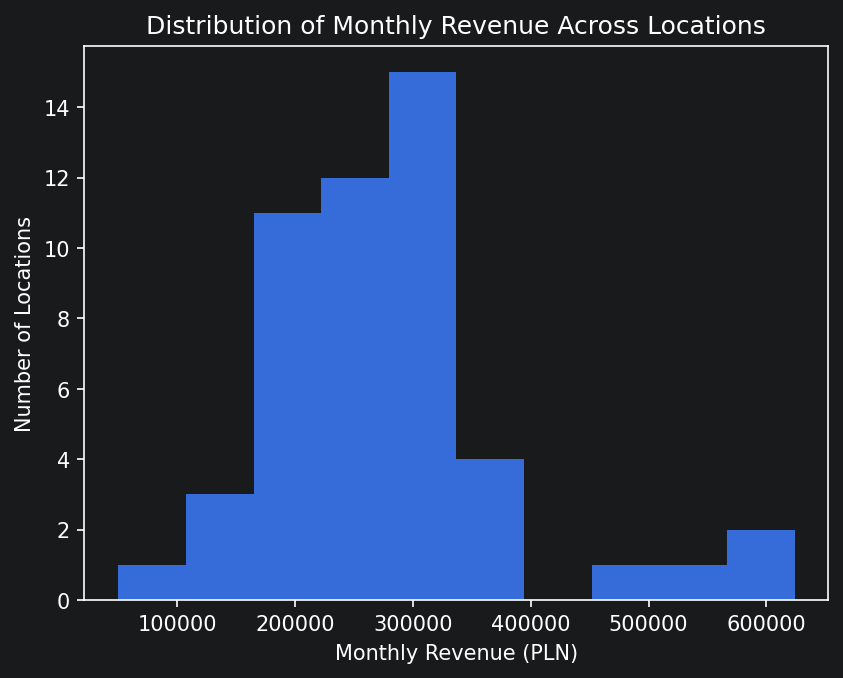
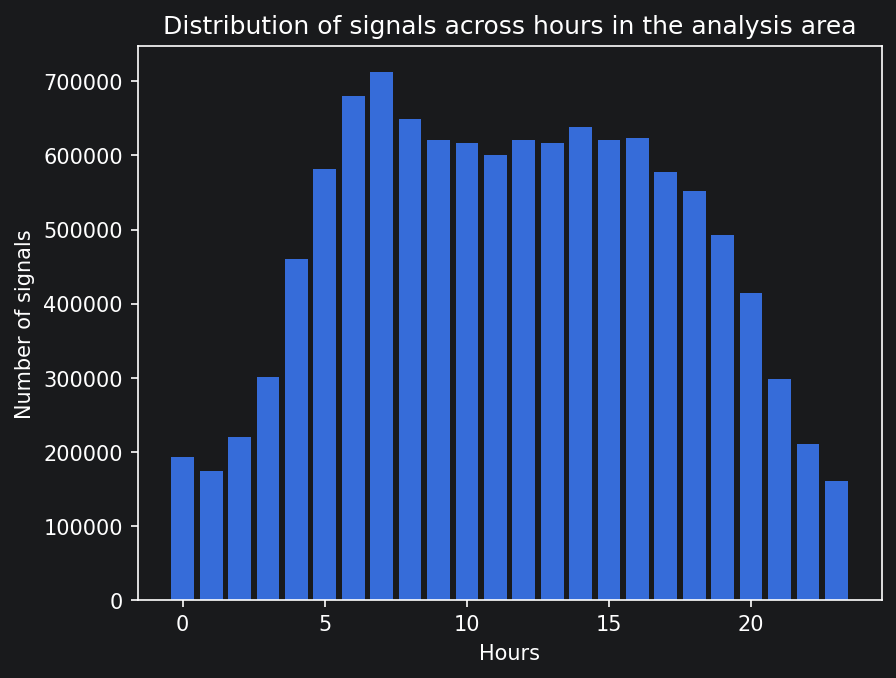
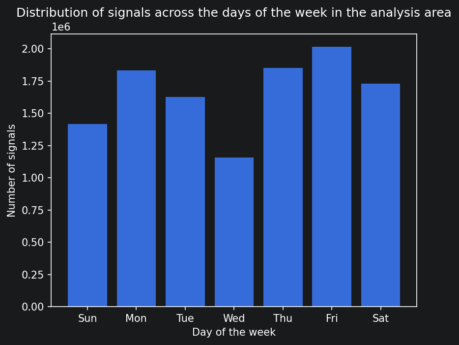
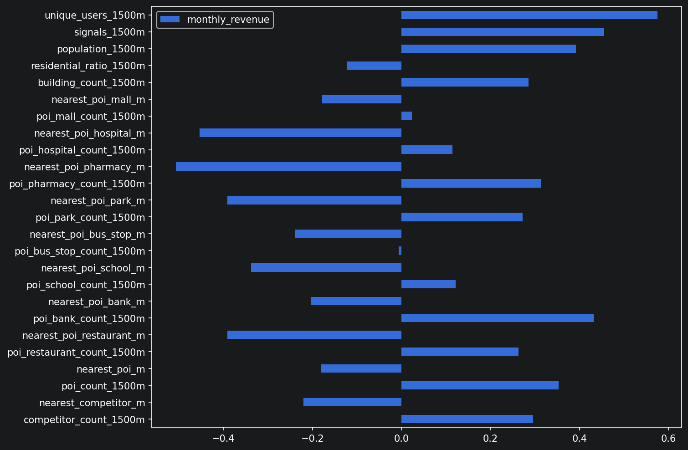
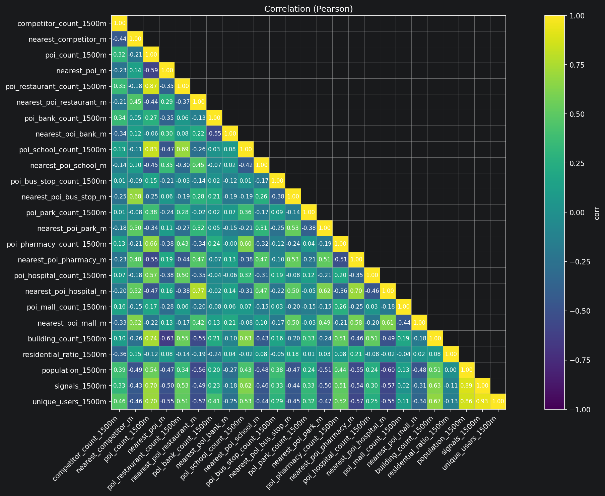
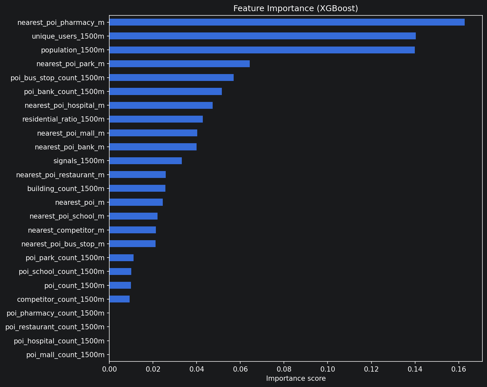
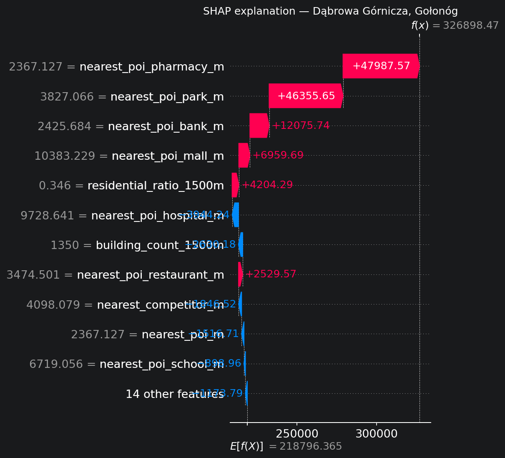
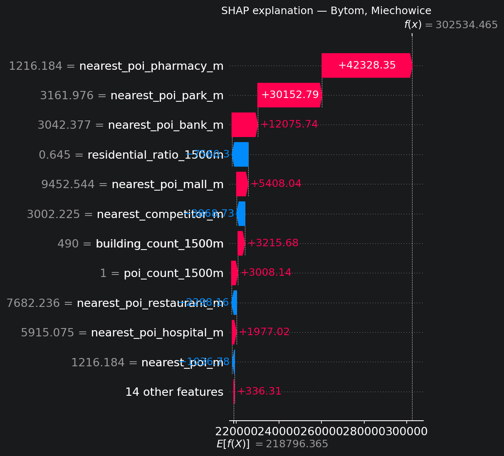
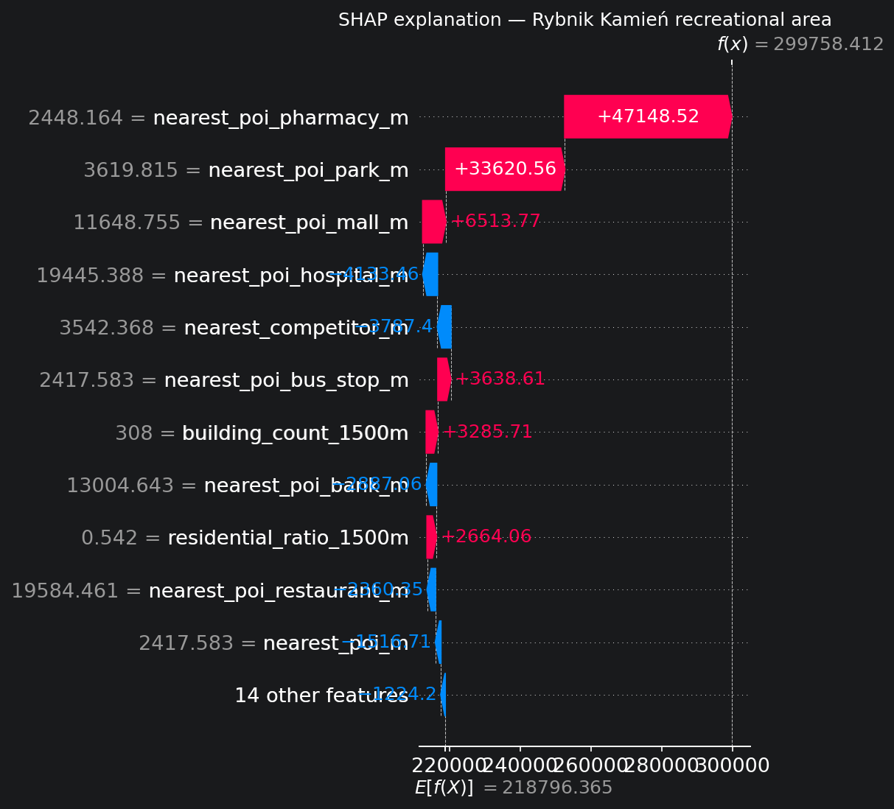

Analiza potencjału sprzedażowego
dla sieci sklepów spożywczych
Identyfikacja optymalnych lokalizacji pod nowe sklepy spożywcze na obszarze Śląsk-Kraków w oparciu o dane mobilne, demograficzne i przestrzenne.
Cel i źródła danych
Celem analizy jest wskazanie lokalizacji o najwyższym potencjale przychodowym dla nowych sklepów spożywczych klienta — z uwzględnieniem istniejącej sieci, konkurencji, danych mobilnych, przestrzennych i o populacji. Wynik: ranking top 3 lokalizacji-kandydatów z uzasadnieniem.
Lokalne pliki CSV
ds_locations— 50 sklepów, monthly_revenue (target)ds_competitors— 98 lokalizacji, 9 siecids_poi— 335 punktów, 8 kategoriids_analysis_area— obszar ekspansjids_districts— 15 dzielnic/gmin
AWS S3 + Snowflake
- S3 buildings — 955 612 budynków z powierzchnią i typem
- S3 population — 450 140 rekordów adresowych z liczebnością
- Snowflake RECRUITMENT_TRACES — 435M sygnałów GPS (cała Polska)
Kluczowe znaleziska
Rozkład przychodu (target)

Konkurencja i POI
98 lokalizacji konkurencji · 9 sieci
| Sieć | Liczba | Udział |
|---|---|---|
| Żabka | 60 | 61.2% |
| Lewiatan | 13 | 13.3% |
| Lidl | 6 | 6.1% |
| Dino, Carrefour | 4+4 | 4.1%+4.1% |
| Pozostałe 4 | 11 | 11.2% |
335 POI · 8 kategorii
| Kategoria | Liczba | Udział |
|---|---|---|
| restaurant / school / bus_stop | 60 każda | 17.9% |
| park / pharmacy | 40 każda | 11.9% |
| bank / hospital | 30 każda | 9.0% |
| mall | 15 | 4.5% |
Interaktywna mapa obszaru analizy
Niebieskie markery — sklepy klienta, czerwone — konkurencja, zielone — POI. Gruba czarna linia — granica analysis_area, cienkie czarne linie — granice dystryktów.
Obszary analizy — kluczowa decyzja
analysis_area ≠ union(districts)
analysis_area to ~87% powierzchni dystryktów. Rozbieżność jest celowa — analysis_area definiuje zakres whitespotu, dystrykt daje szerszy kontekst demograficzny.
3 lokalizacje klienta leżą poza analysis_area, ale wewnątrz dystryktów (maks. 1833m od granicy).
Snowflake — wzorce mobilności


Budowa zestawu cech
Dla każdej z 50 lokalizacji obliczono 25 cech przestrzennych w promieniu 1500m. Funkcje zaimplementowane w src/features.py i przeliczone w notebook 02_feature_engineering.ipynb.
Wybór promienia: 1500m
- Przy 500m większość lokalizacji miała zerowe wartości dla rzadkich kategorii POI (park, szpital, galeria) — near-zero variance uniemożliwiający modelowanie.
- 1500m to naturalny zasięg oddziaływania sklepu spożywczego — odpowiada ~15–20 minutom pieszego spaceru.
- Większy promień (np. 2500m) zacierałby lokalne różnice — sklepy oddalone o 1km miałyby niemal identyczne cechy, eliminując sygnał dla modelu.
- Multi-radius features rozważono i odrzucono — przy 25 cechach i n=50 rozszerzenie przestrzeni cech zwiększyłoby ryzyko overfittingu.
Grupy cech (25 łącznie)
- Footfall (Snowflake): signals_1500m, unique_users_1500m
- Konkurencja: competitor_count, nearest_competitor_m
- POI (8 kat.): count + nearest_distance każda
- Budynki (S3): building_count, residential_ratio
- Populacja (S3): population_1500m
Iteracje feature engineeringu
Iteracja 2 — building features
Próba dodania cech z poziomu sklepu: store_building_area i is_retail_building przez spatial join z gdf_buildings. Korelacja z targetem nieznaczna — cechy nie wniosły wartości i zostały usunięte.
Iteracja 3 — signals_per_user
signals_per_user = signals / unique_users — wskaźnik lojalności. Marginalnie poprawił R² (0.180 vs 0.175), ale różnica mieści się w granicach błędu CV przy n=50 — przy odchyleniu standardowym ±0.45 poprawa o 0.005 jest statystycznie nierozróżnialna od szumu. Nie sprawdzono wariantu z signals_per_user zastępującym signals i unique_users — potencjalnie interesujące, jako że feature łączy informację o gęstości i różnorodności ruchu w jednej mierze. Przy ograniczonym czasie i n=50 zdecydowano się zachować bazowy zestaw cech bez dalszych iteracji.
Ograniczenia zestawu cech
- Typ konkurenta:
competitor_countinearest_competitor_mtraktują wszystkich konkurentów równorzędnie. Żabka (61% rynku) pełni inną funkcję niż Lidl czy Dino — rozróżnienie typów (convenience vs supermarket) mogłoby zwiększyć precyzję featurów konkurencji. - Brak efektów dystryktowych: dystrykt mógłby działać jako cecha kategorialna — np. Kraków vs Katowice mają różne struktury rynku i gęstości zabudowy. Przy n=50 i 15 dystryktach encoding dałby kolejne 14 zmiennych dummy, podwajając przestrzeń cech i zwiększając ryzyko przeuczenia.
- Populacja vs gospodarstwa domowe: użyto łącznej liczby osób (
total). Liczba gospodarstw domowych mogłaby lepiej modelować liczbę niezależnych decyzji zakupowych — zakupy często robi jeden członek gospodarstwa. - Powierzchnia budynku sklepu: rozkład
areajest silnie prawostronnie skośny — jako cecha do modelu liniowego wymagałaby log-transformacji. Przetestowano bez transformacji: korelacja z targetem nieznaczna, model nie poprawił wyników. Nie sprawdzono wariantu z log-transformem — potencjalnie warte eksploracji. - Przestrzeń możliwych cech jest nieograniczona: feature engineering oparty na danych przestrzennych otwiera ogromną liczbę możliwości — różne promienie, kombinacje cech, transformacje, interakcje między kategoriami POI, cechy oparte na sąsiednich komórkach H3, wskaźniki dostępności komunikacyjnej. Przy n=50 kluczowym ograniczeniem nie jest brak pomysłów, lecz ryzyko przeuczenia przy rozszerzaniu przestrzeni cech.
Uzasadnienia podjętych decyzji
- Równe wagi kategorii POI: zamiast arbitralnie ważyć kategorie POI (restauracji jest 18%, aptek 12%, galerii 4.5%), pozwolono modelowi samodzielnie ustalić ich znaczenie przez feature importance. Dane same wskazały wagi — pharmacy i park dominują, mall i restaurant osiągają blisko zera.
- Pominięcie
funszczegolowabudynku_desc: kolumna przechowuje dane jako tablice JSON — każdy budynek może mieć kilka szczegółowych funkcji jednocześnie. Parsowanie jest technicznie możliwe, ale czasochłonne i wykraczało poza zakres analizy.funogolnabudynku_desc(ogólna kategoria) okazała się wystarczająca do obliczeniaresidential_ratio.
Predykcja revenue lokalizacji
Korelacje — uzasadnienie wyboru cech


Testowane modele i wybór finalny
Testowano 8 konfiguracji modeli. Wszystkie oceniane przez RepeatedKFold (5×10), co daje 50 ocen - bardziej wiarygodną estymację przy n=50. Wyższy R² oznacza lepsze dopasowanie modelu do danych (max=1.0).
| # | Model | Features | Target | CV R² mean | CV R² std | RMSE |
|---|---|---|---|---|---|---|
| 0 | Baseline (mean predictor) | — | raw | 0.000 | — | 106 966 PLN |
| 1 | XGBoost regularized ← FINAL | full (25) | raw | 0.175 | ±0.453 | 83 599 PLN |
| 2 | XGBoost tuned (GridSearch) | full (25) | raw | 0.152 | ±0.465 | 84 601 PLN |
| 3 | XGBoost regularized | correlated (9) | raw | 0.124 | ±0.523 | 85 666 PLN |
| 4 | Ridge (tuned) | full (25) | log | 0.033 | ±0.271 | 0.363 log(PLN) |
| 5 | LASSO (tuned) | full (25) | log | −0.141 | ±0.420 | 0.387 log(PLN) |
| 6 | SVR (rbf, tuned) | full (25) | log | −0.053 | ±0.184 | 0.383 log(PLN) |
| 7 | XGBoost regularized | extended with buildings features (27) | raw | 0.140 | ±0.466 | 85 802 PLN |
| 8 | XGBoost regularized | extended with signals per user (26) | raw | 0.180 | ±0.395 | 84 344 PLN |
signals_per_user marginalnie poprawił CV R² (0.180 vs 0.175), ale różnica nie jest
istotna statystycznie przy n=50 — mieści się w granicach szumu oceny CV. Ten model został wytrenowany po wstępnej analizie whitespotów, do której użyto modelu nr 1 z 25 cechami - przy ograniczonym czasie i ze względu na niewielką różnicę w ocenie zdecydowano się więc zachować ten bazowy zestaw cech.
Interpretacja R² = 0.175
Feature importance

Top 5 feature importance
Zbieżność z korelacją Pearsona
Top 3 z feature importance pokrywają się z najsilniejszymi korelacjami z targetem — dwie niezależne metody wskazują te same cechy jako najistotniejsze. Nie oznacza to jednak prostej relacji "więcej/bliżej = lepiej" — jak pokazuje późniejsza analiza SHAP, wpływ każdej cechy jest nieliniowy i zależy od kontekstu pozostałych cech lokalizacji.
| Feature | r Pearson | Importance |
|---|---|---|
| nearest_poi_pharmacy_m | −0.507 | #1 |
| unique_users_1500m | +0.575 | #2 |
| population_1500m | +0.391 | #3 |
n_jobs=1 i OMP_NUM_THREADS=1 dla pełnej reprodukowalności.
Identyfikacja nowych lokalizacji
Strategia filtrowania
- Bufor 1: min. 3000m od istniejącego sklepu klienta — eliminacja kanibalizacji własnej sieci (−25 lokalizacji)
- Bufor 2: 0 konkurentów w promieniu 1500m — wyłącznie rynki niezaspokojone (−6 lokalizacji)
Score normalizowany w obrębie 131 przefiltrowanych komórek — Score 100 = najlepszy kandydat spośród przefiltrowanych, nie globalnie.
Dlaczego H3?
Hexagonalna siatka H3 (Uber) zapewnia równomierny podział obszaru — każda komórka ma 6 sąsiadów w identycznej odległości od centrum, co eliminuje problem nierównych odległości w siatce kwadratowej. Rozdzielczość 6 (~1.2km diameter) to kompromis między gęstością siatki a czasem obliczenia footfall z Snowflake.
Interaktywna mapa whitespotów
Obszary bez heatmapy = lokalizacje odfiltrowane (zbyt blisko sklepu klienta lub konkurencji). Czerwone gwiazdki = top 10 kandydatów, niebieskie kropki = istniejące sklepy klienta.
Top 3 lokalizacje
Najwyżej oceniona lokalizacja leży w Gołonogu, bezpośrednio przy Hucie Katowice — jednym z największych zakładów hutniczych w Polsce. Mimo przemysłowego charakteru okolicy, lokalizacja wykazuje silny ruch pieszy: 426 unikalnych użytkowników w promieniu 1500m plasuje ją wyraźnie powyżej 75. percentyla przefiltrowanej siatki (171.5). Populacja 2037 osób jest powyżej mediany siatki (1110). Apteka w odległości 2367m i park w odległości 3827m leżą wyraźnie poniżej median siatki (odpowiednio 8554m i 8137m), co wskazuje na względną bliskość usług w porównaniu z innymi kandydatami. Zero konkurentów w promieniu 1500m (najbliższy w odległości 4098m) potwierdza niezaspokojony rynek. Residential ratio 35% jest poniżej mediany siatki (0.55), odzwierciedlając przemysłowy charakter otoczenia. Centroid komórki H3 leży przy granicy zakładu przemysłowego — w praktyce nowy sklep byłby zlokalizowany w sąsiedniej dzielnicy mieszkalnej Gołonóg, nie na terenie huty. Niska wartość residential ratio wymaga weryfikacji terenowej faktycznej gęstości zaludnienia w okolicy.
Druga lokalizacja leży w Miechowicach, dzielnicy mieszkalnej Bytomia w pobliżu Góry Drzezgowiec. Populacja 12 186 osób w promieniu 1500m jest wyraźnie powyżej 75. percentyla przefiltrowanej siatki (2405) — to jeden z najsilniejszych wyników populacyjnych spośród wszystkich 131 przefiltrowanych lokalizacji. Residential ratio 65% potwierdza gęsty, mieszkalny charakter dzielnicy. Ruch pieszy jest wysoki (389 unikalnych użytkowników — powyżej 75. percentyla siatki). Zero konkurentów w promieniu 1500m (najbliższy w odległości 3002m) potwierdza niezaspokojony rynek. Model nagradza profil odległości POI — apteka w odległości 1216m i park w odległości 3162m plasują tę lokalizację poniżej median siatki, wskazując na względną bliskość usług. Centroid komórki H3 leży w lesie — w praktyce nowy sklep byłby zlokalizowany w sąsiednim osiedlu mieszkalnym Miechowice. Zalecana weryfikacja terenowa dostępności i gęstości zabudowy.
Trzecia lokalizacja leży w pobliżu Parku Rekreacyjno-Wypoczynkowego Rybniki Kamień, na granicy Leszczyn i Czerwionki-Leszczyn. Obszar wykazuje skromny potencjał mieszkalny — populacja 671 osób w promieniu 1500m jest poniżej mediany siatki (1110), a ruch pieszy (80 unikalnych użytkowników) niski. Model wysoko ocenia tę lokalizację ze względu na profil odległości POI: 2448m do najbliższej apteki i 3620m do najbliższego parku — obydwie poniżej median siatki — przy zerowej konkurencji w okolicy (najbliższy konkurent w odległości 3542m). Podobnie jak w przypadku lokalizacji #1, niska bezwzględna liczba mieszkańców i niski ruch pieszy wymagają weryfikacji terenowej — model może nagradzać tu dystans do usług i brak konkurencji bardziej niż rzeczywisty popyt ze strony mieszkańców i potencjał komercyjny.
Analiza SHAP — wyjaśnienie decyzji modelu



Porównanie: top 3 kandydaci vs top 3 istniejące sklepy (wg revenue)
| Feature | Top 3 existing (mean) | Top 3 candidates (mean) |
|---|---|---|
| nearest_poi_pharmacy_m | 1 531m | 2 010m |
| unique_users_1500m | 2 278 | 298 |
| population_1500m | 31 330 | 4 965 |
| nearest_poi_park_m | 4 045m | 3 536m |
| residential_ratio_1500m | 0.49 | 0.51 |
| competitor_count_1500m | 1.0 | 0.0 |
| nearest_competitor_m | 1 647m | 3 548m |
Rekomendacje i dalsze kroki
Ograniczenia modelu
- R²=0.175 — model wyjaśnia ~17% wariancji revenue. Pozostałe ~83% to czynniki operacyjne poza zakresem analizy lokalizacyjnej.
- n=50 — wysokie std (±0.453) odzwierciedla niestabilność CV przy małej próbce. GridSearch nie dał stabilnej poprawy.
- Dane mobilne z lipca 2020 — jeden miesiąc, jedno lato. Sezonowość nie jest uchwycona.
- nearest_poi_park_m i nearest_poi_pharmacy_m dominują SHAP mimo nieliniowej relacji z revenue — co może nie odpowiadać logice biznesowej dla wszystkich kandydatów.
Dalsze kroki
- Weryfikacja terenowa top 3 lokalizacji — szczególnie Dąbrowa (charakter przemysłowy) i Rybniki Kamień (niski footfall).
- Więcej miesięcy danych Snowflake — lipiec 2020 to jeden punkt w czasie. Dane z pełnego roku pozwoliłyby uchwycić sezonowość i trendy.
- Dodatkowe featury — dane o nowych inwestycjach mieszkaniowych, plany zagospodarowania przestrzennego, dane o transporcie publicznym.
- Większy dataset treningowy — n=50 to fundamentalne ograniczenie. Pozyskanie danych o przychodach sklepów innych sieci w regionie pozwoliłoby znacząco rozszerzyć zbiór treningowy bez konieczności otwierania nowych lokalizacji — dane od partnerów, brokerów danych lub źródeł publicznych mogłyby zwiększyć n z 50 do kilkuset obserwacji.
- Modele hierarchiczne — uwzględnienie efektu miasta/dystryktu jako ukrytego parametru, zamiast traktowania wszystkich 50 lokalizacji jako jednorodnej populacji.
Notebooks: 01_eda · 02_feature_engineering · 03_model_and_interpretation · 04_whitespot_analysis